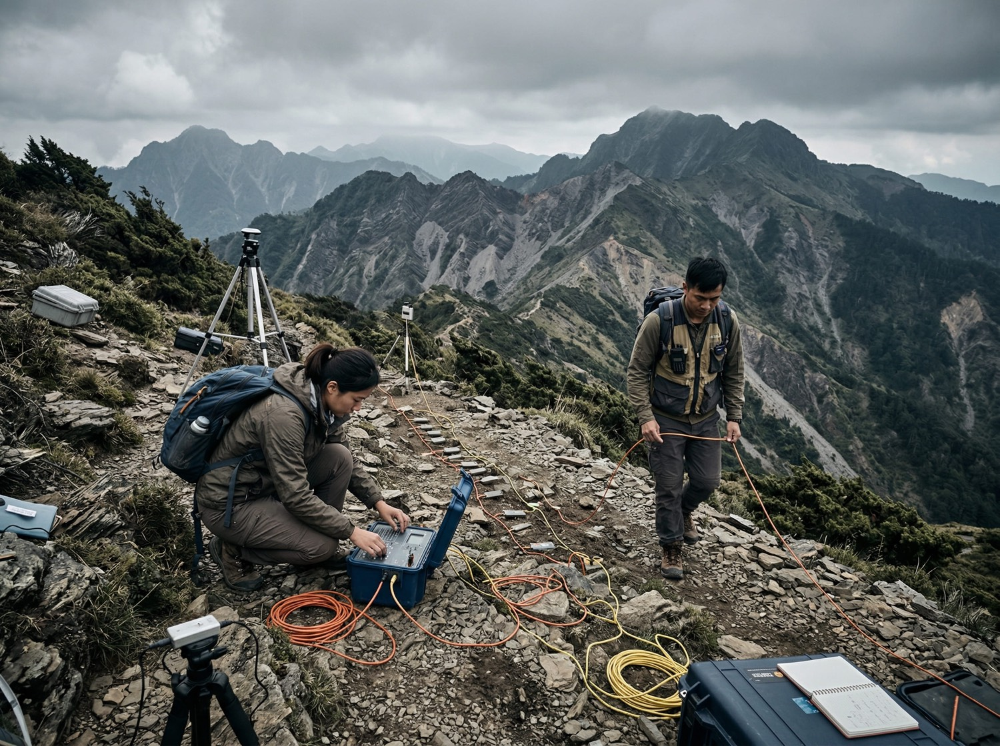
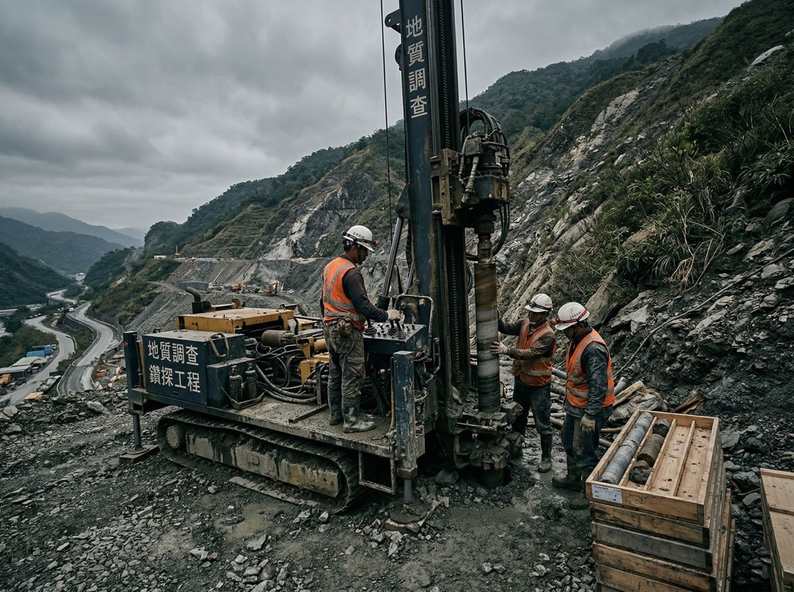
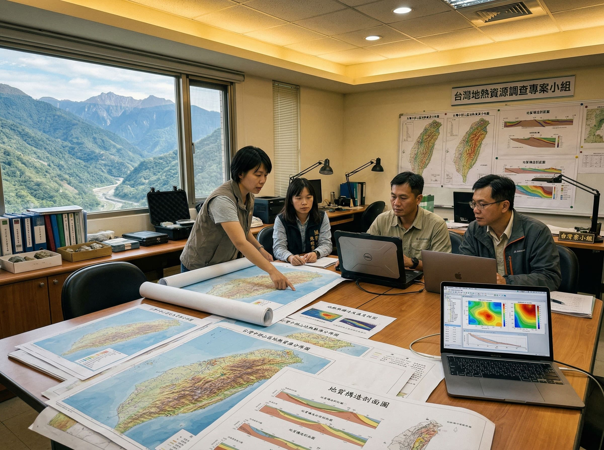
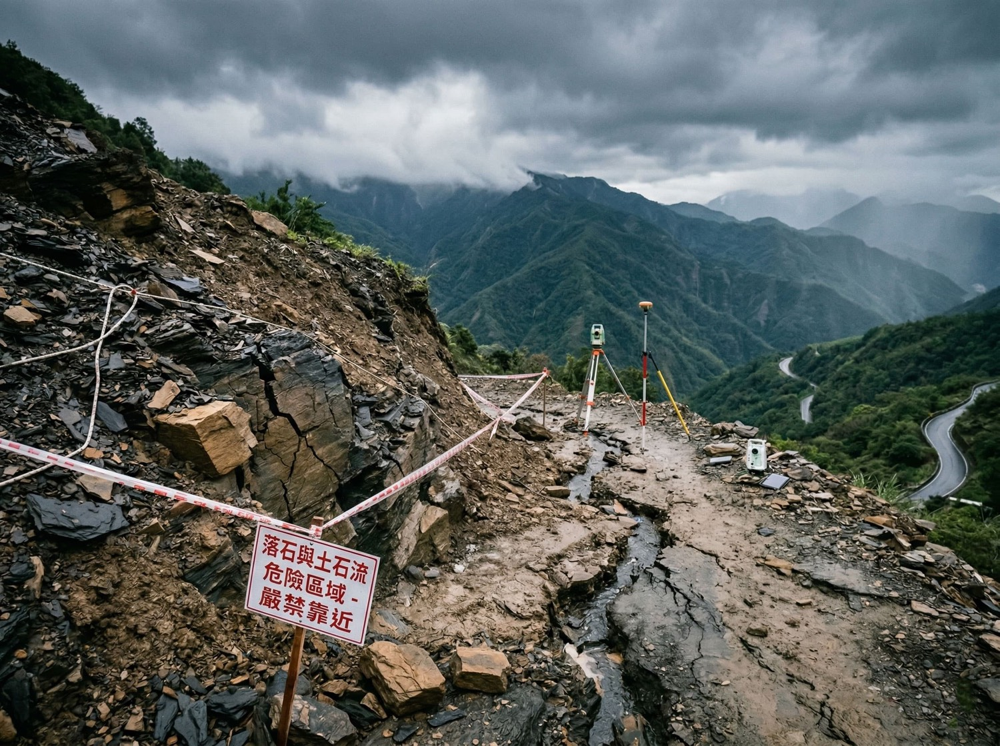

新北市 · 地熱潛勢調查
金山地熱潛勢區調查
位於大屯火山群延伸影響區，含硫磺泉、碳酸泉等多樣溫泉水質。執行地表地質調查、地球化學分析、地球物理探測，完成地熱資源潛勢評估，評估地熱發電開發可行性。

花蓮縣 · 地熱資源評估
瑞穗地熱資源評估
一號井測得 165°C、二號井 174°C 高溫地熱資源。熱源來自近地表高溫變質岩，儲熱層為黑色片岩或板岩。執行地熱示範獎勵申請、鑽井現場管理與地質研判。

南投縣 · 地熱潛勢調查
廬山地熱潛勢調查
廬山溫泉屬鹼性碳酸泉，斷層系統提供地下熱水上湧通道。執行地表地質調查與地球物理探測，評估深部地熱儲集層條件與發電開發潛力。

台東縣 · 地熱探勘
延平地熱探勘計畫
位於板塊碰撞帶附近，深部地層蘊藏 150°C 以上高溫地熱資源。區域內發達斷層與裂隙系統是地熱流體上升通道，執行地質調查與地球化學分析，評估開發潛力。

苗栗縣 · 地熱潛勢評估
泰安地熱潛勢評估
整合地質、地球化學與地球物理資料，完成地熱潛勢區劃定。

工程地質 · 安全評估
山區開發工程地質評估
邊坡穩定分析、基礎調查、地質災害評估，確保工程安全。

基礎設施 · 地質調查
基礎設施地質調查
執行地質鑽探與土壤試驗，提供基礎設計建議。

公部門 · 資源調查
地礦中心地熱資源調查計畫
協助政府部門執行全國地熱資源調查與評估工作。

公部門 · 防災規劃
地方政府地質災害評估
協助地方政府進行地質災害潛勢評估與防災規劃。